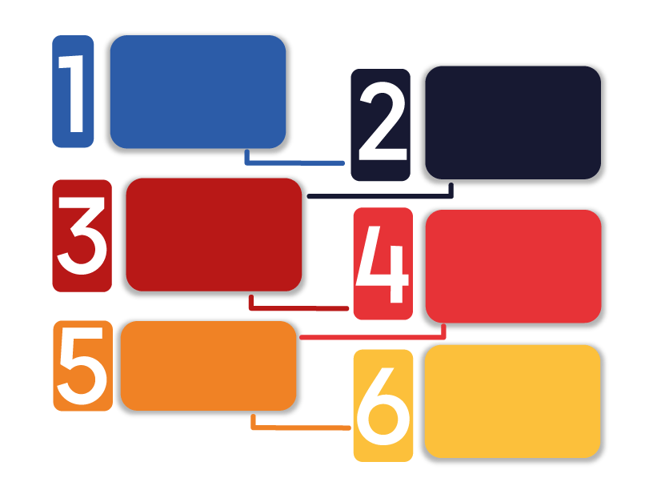

Dentro de um retângulo o um fone de ouvido que é o play do áudio.
Com tantas informações que disponibilizamos no material complementar, você deve estar se perguntando por onde começar. No podcast a seguir preparamos algumas sugestões.


Sugestões para encaminhamento de alunos para intervenção de carreira
Clique nos botões sobre a imagem para descobrir:
Dentro de um quadro, seis retângulos coloridos, e no centro de cada um deles um ponto de interrogação que é o link da informação.

-
Identifique se na sua própria escola não existe um psicólogo ou orientador educacional preparado para ajudá-lo e fazer esta intervenção!
Close -
Ajude os alunos a buscar fontes de informação qualificadas. Vocês podem começar pelos sites do Guia do Estudante, do Guia das Carreiras, e do Quero Bolsa.
Close -
Caso haja necessidade, fazer buscas mais profundas em sites das instituições formadoras que oferecem o curso escolhido.
Close -
Pesquisar os mesmos cursos em diferentes instituições, para avaliar o perfil específico de cada formação e eventuais diferenças que possam ser consideradas na hora da tomada de decisão.
Close
Figura 01 - Fonte: Imagem produzida pela equipe gráfica do projeto
Que tal agora, que já conhece os principais locais que prestam serviços de orientação de carreira, fazer novamente aquela busca inicial do desafio e tentar encontrar alternativas na sua regiao? Será que o resultado vai ser diferente? Vamos tentar novamente?
Realização:
Secretaria de Educação Profissional e Tecnológica
Produção: